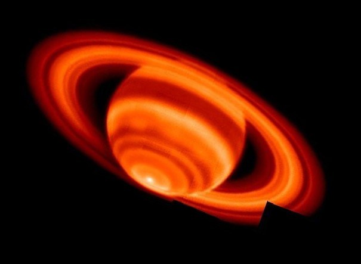

"Pero de las cosas que dejamos ir, nos sorprenderá ver que algunas regresan a ti"
"Habla menos, sonríe más. No dejes saber a que te opones o a qué no"
"La imperfección es hermosa... Al menos para mí"
Cada día se presenta una imagen o fotografía diferente de nuestro fascinante universo,
junto con una breve explicación escrita por un astrónomo profesional.
Esta foto fue tomada el 10 de Febrero del 2005
"Red Saturn"
Crédito: G. S. Orton y P. A. Yanamandra-Fisher (JPL), Observatorio Keck, NASA
Explicación: Esta extraña imagen en falso color del planeta Saturno, por lo demás tan familiar, muestra cambios de temperatura basados en la emisión infrarroja térmica en la atmósfera y los anillos del gigante gaseoso. Registrada desde el telescopio Keck I de Mauna Kea, la nítida imagen terrestre del hemisferio sur de Saturno es un mosaico de 35 imágenes. Basándose en los efectos de la luz solar durante la estación estival austral, se preveían tendencias generales de calentamiento. Pero un resultado sorprendente de los datos de las imágenes infrarrojas es la clara indicación de un casquete polar abruptamente más cálido y un punto caliente brillante en el polo sur de Saturno. El cálido polo sur y el punto caliente pueden ser únicos en el sistema solar y está prevista una nueva exploración de la región utilizando los instrumentos de la nave espacial Cassini. ¿Cuál es la temperatura del punto caliente de Saturno? La temperatura de la troposfera superior es de unos sofocantes 91 grados Kelvin (-296 grados Fahrenheit) en el polo.
Los historiadores concuerdan en datar el origen de realizar una celebración alrededor de
un cumpleaños aproximadamente en el año 3000 a.C., señalando a los egipcios
como los precursores de dicha tradición, aunque originalmente lo que se celebraba no
era cada año de vida que cumplía una persona sino que se contaba desde el momento
en que un faraón era coronado.
Babilonios y antiguos griegos ampliaron las celebraciones a sus deidades,
homenajeando a éstas e iniciando la tradición de servir una tarta
(en esos tiempos torta a base de harina, cereales y miel) que debía
ser redonda como la Luna, ante la creencia de que ese satélite era
uno de los que más influencia tenía en sus vidas.
Los romanos comenzaron a celebrar la fecha de nacimiento de sus
emperadores y se amplió con el tiempo a cónsules, senadores (solo a varones)
Por su parte, el cristianismo consideró los cumpleaños como una
tradición pagana, de ahí que actualmente algunas religiones como los
Testigos de Jehová lo prohíban.
A pesar de los orígenes siento que cada persona tiene su razón individual para celebrar los cumpleaños, ya sea el de uno mismo o el de alguien más. Mi razón para celebrar tu cumpleaños es conmemorar el solo hecho de que hayas nacido y que actualmente sigas con vida, vivir es difícil y cada día que pasa es un paso más en nuestro camino hacia el futuro. Si fuera por mí organizaría grandes celebraciones todos los días en tu honor, pero afortunadamente tengo una fecha para contabilizar los años que llevas existiendo.
Dado lo anterior, te presento una pequeña sección en la que resalto de forma muy honesta lo que pienso acerca de ti, acerca de tu forma de ser y lo que inspiras o significas para mí.
Yo te describiría ante los demás como una persona
que sabe ser paciente, que sabe ser amable con los
demás, que se adapta a las circunstancias aunque
sea difícil, que toma las riendas de un proyecto
cuando nadie más lo hace, que eres una fuente de
conocimiento sobre temas realmente interesantes,
que eres una persona que puede dedicarse a estudiar
por gusto y eso es increíble porque no todo el mundo lo hace.
Eres una persona que puede guardar la calma
en situaciones difíciles, alguien que te dará el
mejor consejo cuando estés atascado en
alguna decisión importante, alguien de mente
abierta con quién puedes hablar sin miedo
a sentirse juzgado, que se toma el tiempo
de acariciar a cada gato que ve.
Luz, eres una persona muy bella, inteligente
y astuta. Transmites seguridad a los demás,
estabilidad y soporte. Transmites fuerza,
perspicacia y sutileza. Eres honesta, eres
de fiar, eres sagaz y también capaz.
Tal vez puedas llegar a dudar de tus facultades,
pero los que te queremos jamás dudaremos de
ti y de lo que puedes lograr.
"No importa lo que digan, no eres un fracaso. Cualquiera que diga eso es un tonto".
"Sólo se vive una vez, y yo no quiero esperar esa felicidad universal. Ante todo, quiero vivir. Si no sintiese este deseo, sería preferible no tener vida". - Fyodor Dostoevsky
Feliz cumpleaños, pero no solo el de hoy, espero que cada uno de tus cumpleaños sea realmente grato para ti. Anhelo que tu rostro desprenda felicidad con cada año que pase y disfrutes de estar con vida junto a los que quieres.